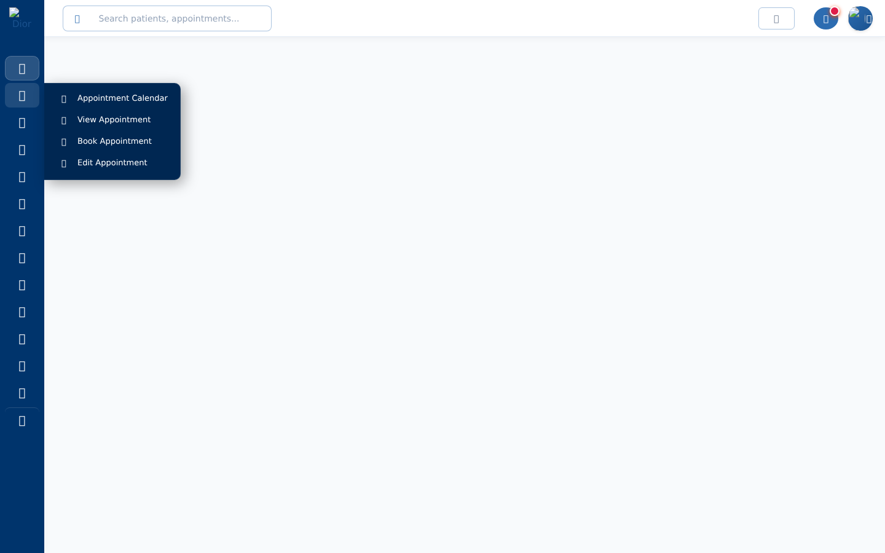
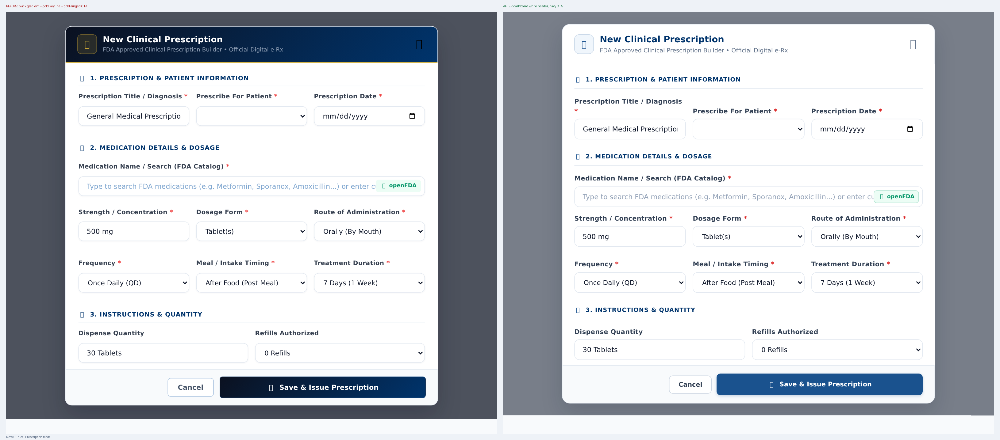
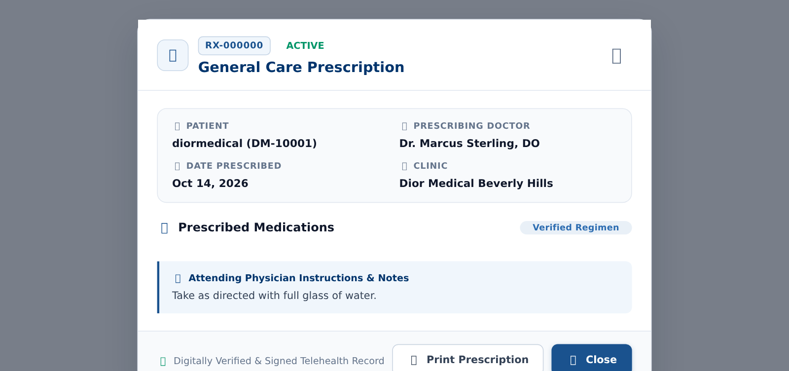
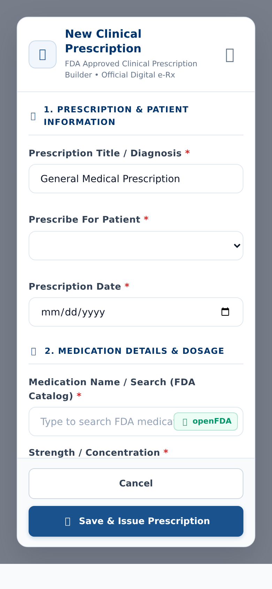

Doctor Dashboard — visual fixes
Do cheezein: (1) collapsed sidebar ka 72px rail, (2) e-Prescription ke dono popup ka colour/style. Scope sirf doctor dashboard — koi naya design invent nahi kiya, project ke hi tokens use kiye hain.
1. Collapsed sidebar (72px rail)

Left = pehle, right = ab. 1440px desktop, collapsed state, Digital Prescriptions tab.
| Bug | Root cause | Fix |
|---|---|---|
| Icon shift Appointments / Patients / Accounts / Consultations / Pharmacy / Documents / Telemedicine — in 7 rows ka icon rail ke centre se ~18px baayein chipka hua tha. Baaki 6 theek the. |
Jin buttons ka submenu hai unke andar teesra child hota hai —
<i class="fas fa-minus submenu-icon">. Collapsed CSS me
.nav-label aur .grp-title hide the par .submenu-icon ki
width 0 karne wali rule
.dior-side-nav .dior-nav-btn i { width: 24px } se haar gayi. Chevron
invisible tha par 24px + 12px gap jagah kha raha tha. |
Collapsed mode me .submenu-icon ko display:none + zero
width/margin/flex-basis. Saath hi .grp ko 56px inner width, buttons ko
gap:0, aur visible icon ko margin: 0 auto — ab har glyph rail ke
exact centre (x=36) par. |
| Table cut Wide registries ka right side (Status, Actions) screen se bahar kat raha tha. |
.dior-main-content { overflow-x: clip } — clip me scrollbar banta nahi, isliye
overflow hone par content silently kaat diya jaata tha. Table ~1396px, wrapper
~1218px. |
Wrapper (.pr-table-wrapper, .va-table-wrapper) me
overflow-x:auto + patla scrollbar. Page par sideways scroll nahi aata. |
| Active row Selected item solid white block tha, white icon nearly invisible. |
Base rule .dior-nav-btn.active { background:#FFFFFF } collapsed rail me bhi lagu
tha. |
Translucent white pill (rgba(255,255,255,.16) + hairline ring), icon
#FFFFFF; hover bhi same treatment. |
Measured (Chromium, collapsed)
| Check | Before | After |
|---|---|---|
| Icon centre in rail | 17.5px / 35.5px (mixed) | 36px on all 13 rows |
| Chevron reserved space | 24px + 12px gap | 0px |
| Table wrapper overflow | clip |
auto (scrollable) |
| Page horizontal scroll | none | none |
| Sidebar 72px / content offset (1025→1920px) | correct | unchanged |
| Mobile (<1025px) drawer | off-canvas | unchanged |
Submenu flyout (hover) still works

390px phone — drawer off-canvas

2. e-Prescription popups — colour & style
Popup pehle legacy "black gradient + gold keyline" auth styling par tha, jo dashboard me kahin aur nahi milta. Ab wahi tokens jo Appointments / Consultation Notes aur baaki dashboard modals use karte hain.

New Clinical Prescription — left pehle, right ab.
| Element | Before | After (project token) |
|---|---|---|
| Header background | black→navy gradient + 2px gold keyline | white, 1px #E2E8F0 border (dashboard modal pattern) |
| Title / subtitle | white text on dark | #00346C title, #64748B subtitle |
| Brand icon tile | gold icon on gold-tinted box | navy icon on #F0F6FC tile |
| Inputs | 38px, #CBD5E1, 7px radius |
42px, #CBD5E1, 8px radius, navy focus ring |
| Primary CTA | gradient + gold border; gold fill on hover | flat #1A528E → #00346C hover |
| Secondary (Cancel / Print) | mixed borders, inline styles | white + #CBD5E1, navy on hover |
| Close (×) | pitch black, no state | #64748B → #0F172A with soft bg |
| Section headings | navy + gold hairlines | navy, 1px #E2E8F0 underline |
| View-Rx gold icon accents | inline #d4af37 |
var(--dior-color-primary) |
View Prescription — after

390px phone — stacked footer, 44px targets

3. FTP par kya upload karna hai
- 1.
wp-content/plugins/dior-medical/assets/css/dior-custom.css— file ke end me do naye blocks hain:COLLAPSED SIDEBAR POLISH (TASK 2)aurPRESCRIPTION BUILDER + VIEW-Rx MODALS (TASK 3). Koi purana rule chheda nahi gaya, sirf end me append hua hai. - 2.
wp-content/plugins/dior-medical/templates/doctor-tabs/digital-prescriptions.php— sirf 2 lines badli hain: View-Rx modal ke do icons ka inline gold colour (#d4af37) →var(--dior-color-primary, #1A528E). Markup/JS same. - Baaki kuch nahi —
dior-doctor-navigation.js,doctor-dashboard.phpyadior-fda-prescription-modal.jsko is baar chhune ki zarurat nahi. - CSS
filemtime()se version hoti hai → upload ke baad cache auto-bust, phir bhi ek hard refresh (Ctrl/Cmd + Shift + R). - Sab CSS sirf
#dior-doctor-appke andar scoped hai, isliye patient portal aur admin dashboard par koi asar nahi.
4. Verify kaise karein
- Sidebar collapse karein — har icon rail ke beech me. Submenu items par hover — flyout 64px par pehle jaisa.
- Digital Prescriptions → + — popup ka header white, title navy, CTA flat navy.
- Kisi row ka eye icon — View Prescription modal bhi wahi white/navy treatment.
- Phone par: modal ke buttons full width, 44px tap targets, koi horizontal scroll nahi.